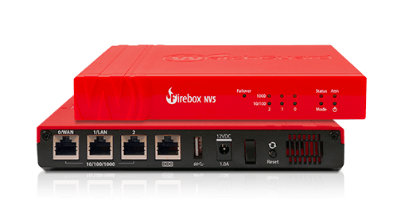

Configuration des Équipements
Missions techniques – Alternance BTS SIO · Koesio Centre Est
Configuration du NAS
- Mise en place de la double authentification pour renforcer la sécurité
- Configuration RAID pour assurer la redondance et la protection des données
- Blocage automatique des comptes après 10 tentatives de connexion échouées
- Création et gestion des dossiers partagés selon les besoins des utilisateurs
Configuration du Pare-feu
- Utilisation d'un modèle par défaut avec des protocoles réseau ouverts pour un usage minimal
- Configurations ajustées au cas par cas en fonction des besoins clients
- Intégration d'un domaine d'authentification (SSO) si nécessaire
- Configuration du filtrage web (géolocalisation, etc.) pour un contrôle d'accès précis
- Mise en place et gestion des connexions VPN
- Configuration des réseaux WAN et LAN pour une gestion efficace du trafic
Configuration Serveur & PC
- Assemblage des composants matériels du serveur
- Mise en place d'une configuration RAID pour sécuriser les disques durs
- Installation et configuration de l'OS avec le rôle Hyper-V
- Installation de l'agent pour la supervision et la gestion à distance
- Pour les PC : Création des profils utilisateur personnalisés
- Script interne pour désinstaller les logiciels indésirables
- Installation des logiciels essentiels (Java, Chrome, PDFGear, 7-Zip…)
- Mise en place des configurations système et installation de l'agent de gestion
Configuration Téléphones & Switch
- Configuration du réseau téléphonique avec un VLAN dédié
- Attribution des numéros de téléphone et configuration des répertoires
- Paramétrage des messages vocaux pour la gestion des appels entrants
- Configuration du renvoi d'appel et des règles de priorité
- Intégration des téléphones avec le standard IPBX
- Tests fonctionnels et validation avant déploiement final
- Pour le Switch : Configuration des VLANs (TAG/UNTAG)
Équipements utilisés
NAS Synology

WatchGuard (Pare-feu)
Serveur HP
Téléphone Yealink